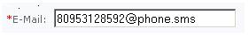

Процесс создания SMS подписки практически ничем не отличается от создания почтового подписчика, но необходимо учитывать следующие детали:
| Пример правильного значения поля EMAIL - 79031255567@phone.sms |  |
| © «Битрикс», 2001-2008, «1C-Битрикс», 2008 | 1С-Битрикс: Управление сайтом |